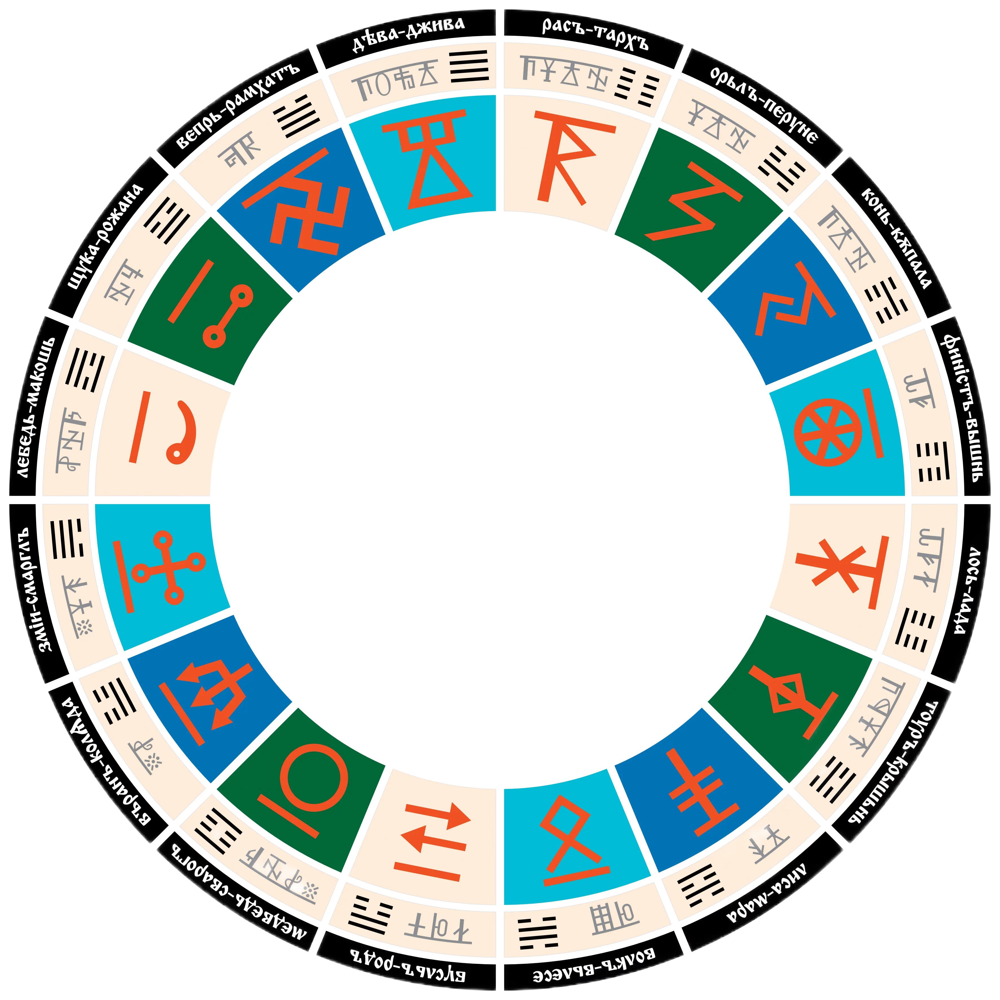

🌌 Галактические сутки (Сутки Сварога)
Полный оборот Солнечной системы — 25 920 лет. 16 эпох по 1620 лет каждая.
🌌 Сварожий Круг. Великое Вращение Вселенной
Мы начинаем наше путешествие с самого главного — с понимания того, где мы живём. Не в бытовом смысле, не в географическом, а в космическом, глубинном. Ибо дом человека — не только стены его жилища и не только отечество. Дом человека — это и планета, и галактика, пояс галактики, звёздная система. Важно знать где мы находимся, потому что наше местоположение в космосе оказывает судьбоносное влияние не только на человека, но и на судьбы народов и человечества в целом. И это не просто астрология, это физика, это энергообмен на тончайшем уровне. Древние народы знали это. Они не отделяли себя от космоса. Они не мыслили свою жизнь вне связи со звёздами, планетами и теми тонкими энергиями, что пронизывают всё сущее.
Вселенная не статична, она совершает круговое движение вокруг своего центра. Условный круг, который представляет из себя наша вселенная, древние называли «Коло Сварога» или «Коло Рода». В этом великом вращении — ключ к пониманию космических ритмов. Всё движется. Всё вращается. Всё подчиняется единым конам. Древние славяне различали несколько уровней этого вращения:
- Вселенское коло Сварога — вращение галактик вокруг центра Вселенной. Это масштабы сверхвеликие и по временным и по пространственным характеристикам.
- Великое коло Сварога — вращение звёздных систем, таких как наша система Ярилы-Солнца, вокруг центра галактики.
- Большое коло Сварога — вращение Ярилы-Солнца вокруг центра пояса Ориона, в котором мы находимся.
- Малое Коло Сварога — вращение планет звёздной системы вокруг центра системы — вокруг Солнца.
Это — иерархия. Это — вложенные друг в друга сферы. Как матрёшка.
🌠 Галактика Свати: Млечный Путь
Теперь опустимся на уровень Великого Кола Сварога — на уровень нашей галактики. Форма галактики, как установили современные астрономы, — четырёхрукавная спираль. Рукава расходятся от центра, закручиваясь в определённую сторону. Наши предки называли эту форму правосторонней СвасТикой. Это не случайное совпадение. Древние знали то, что современная наука подтвердила лишь спустя тысячелетия. Поэтому галактику называли «Свати», где Сва — небеса, тик — движение, дословно движущиеся небеса. Это знание поразительно. Невозможно было дать такое точное название, не имея представления об истинной форме галактики. Откуда древние народы знали то, что мы открыли только с помощью мощнейших телескопов? Ответ прост: технологические, интеллектуальные и психические способности тех, чья кровь течёт в наших венах, превышали возможности современного человека. Они обладали технологиями гораздо более тонкими, чем наши. Можно привести в пример единицы измерения времени, которыми пользовались древние, такие как миг и сиг. Только представьте: в одной секунде содержится 300 244 992 сига, а 1 сиг примерно равен 30 колебаниям электромагнитной волны атома цезия, взятого за основу для современных атомных часов (или примерно 1/300 млрд доля секунды). Зачем же нашим Предкам нужны были такие малые величины? Ответ прост — для измерений сверхбыстрых процессов. Таким образом, древние выражения «сигать», «сигануть» в современном языке могут означать только «телепортировать».
Кстати, фашисты не случайно использовали свастичные символы как основные в своей армии — цель их хозяев в лице древних жидо-англосаксонских династий была проста — опорочить древние солярные символы, тесно связанные с культурой славян, чтобы впоследствии при уничтожении остатков нашей культуры апеллировать фактом связи этих символов с фашизмом. Простейшая формула.
☀️ Ярило-Солнце: Наше Трисветлое Светило
Наше Солнце, которое мы видим каждый день, древние славяне называли трисветлый Ярило-Солнце. Это значит, что он светит в трёх мирах одновременно:
- В Яви — как физическое тело, излучающее греющий свет, который мы видим глазами.
- В Нави — как тонкоматериальная структура, излучающая спектры энергии, невидимые обычному зрению.
- В Прави — как духовный центр, источник высшей, божественной силы.
Это разные виды излучения, с качественно разными уровнями вибрации. Но все они — единое целое. И все они влияют на нас, на нашу жизнь и сутьбу.
Такое триединое строение имеет каждое светило в космосе. Великие светила, находящиеся в центре галактики, излучают мощнейший поток света этой самой тройственной природы — от фотонов до молекул духа. В следующих посвящениях мы самым подробным образом разберём, как устроена эта тройственная природа космоса. А пока нужно до конца разобраться, где летит наш космический корабль под названием Земля Мидгард.
Согласно древним текстам — Ярило-Солнце входит в созвездие Зимун. Сразу оговорюсь, что современные астрономы так не считают, так как не способны наблюдать это созвездие с тех расстояний, с коих его могли видеть наши предки, являющиеся космической культурой. Зимун — в славянской космологии — Небесная корова, разлившееся молоко которой мы сегодня называем Млечный Путь, в древности же говорили небесный Ирий — то есть небесная река. Прообразом небесного Ирия в древности была река Иртыш, расположенная в так называемом Беловодье — одной из прародин наших предков. Эту реку изначально звали Ирий тишайший, что потом и трансформировалось в «Иртыш». Сегодня созвездие Зимун мы называем иначе — Малая Медведица. Наше Ярило-Солнце является восьмой звездой в этом созвездии. И располагается созвездие коровы Зимун вовсе не в центре Млечного Пути, а на его окраине. Можно сказать, в звёздной провинции, на расстоянии примерно 25 тысяч световых лет от центра. Солнце и ближайшие к нему звёзды движутся вокруг центра галактики со скоростью 250 километров в секунду. Полный оборот — один галактический год — они совершают примерно за 200–250 миллионов лет. Это и есть Великое Коло Сварога — вращение рукавов и звёздных систем, их наполняющих, вокруг центра галактики.
🕰️ Сутки Сварога
Следующим на нашем пути предстаёт относительно меньшее Коло, составляющее галактические сутки или Сутки Сварога. Галактические сутки ознаменованы движением солнечной системы по окружности рукава Ориона. Один полный оборот таких суток длится 25 920 лет, и этот круг разделён на шестнадцать равных частей. Эти части иначе называются небесными чертогами, каждый из которых является небесным домом одного из шестнадцати созвездий звёздной карты, составленной нашими предками. Каждый такой чертог наша солнечная система преодолевает за 1620 земных лет. У каждого чертога имеется тотемное животное и Бог-покровитель. В каждом действуют уникальные космические энергии, оказывающие особое влияние на каждого из нас. Эти энергии — не что-то необъяснимое, а вполне реальное физическое явление, имя которому вибрация и, что важнее, её частота. Именно частота характеризует тип информационного кода, переносимого волнами космических вибраций. На всём протяжении большого Сварожьего круга энергии неоднородны: где-то преобладают низкочастотные энергии тёмной Нави — этакие духовные болота или пустоши. Какие-то пространства пронизывают высокочастотные энергии светлого духа Прави — это оазисы, наполненные жизньродящей энергией космоса, пробуждающей сознание. Есть определённые границы влияния тёмных и светлых энергий, и они обусловлены тем, что есть освещённая галактическим ядром сторона рукава Ориона, а есть затенённая. Это создаёт условия, при которых Сутки Сварога делятся на похожие на планетарные циклы — то есть день, вечер, ночь и утро.
Утро Сварога знаменуется началом входа солнечной системы в космические чертоги, где власть берут в свои руки светлые силы космоса. Точно так же, как и в планетарных масштабах, в масштабах галактических суток существует маленький отрезок времени, который называется предрассветные сумерки. Только если на земле предрассветные сумерки длятся не так уж долго, то в масштабах космоса прохождение этой тонкой кромки может длиться десятки лет. И если в случае с земными сумерками перед рассветом нам ничего не угрожает, то в случае с космосом всё обстоит не так уж сладко, ибо в этот период всё то зло, что скрывалось до этого во мраке духовной ночи, начинает вылезать наружу. Оно даёт свой последний бой, забирает с собой жатву павших в гордыне и невежестве душ. После этой битвы, которая, кстати, сегодня и развернулась на наших глазах, ибо как раз сейчас и идёт час перед рассветом Сварога, наступает полноценное галактическое утро Сварога. Мир начинает плавно наливаться благоденствием, как жарким, влажным летом наливается сочный плод. В этот период царит любовь, честь, достоинство и все высшие качества, присущие царствию неБесному, приходящему на волнах энергий мира Прави через сознание светлых людей, вершащих правые дела.
📅 Таблица: Нынешние Сутки Сварога
| № | Чертог | Бог-Покровитель | Дата эпохи | Фаза |
|---|---|---|---|---|
| 1 | Дева | Джива | 10948–9328 г. до н.э. | Вечер |
| 2 | Раса (Леопард) | Даждьбог (Тарх) | 9328–7708 г. до н.э. | Вечер |
| 3 | Орёл | Перун | 7708–6088 г. до н.э. | Вечер |
| 4 | Конь | Купала | 6088–4468 г. до н.э. | Вечер |
| 5 | Финист | Вышень | 4468–2848 г. до н.э. | Ночь |
| 6 | Лось | Лада | 2848–1228 г. до н.э. | Ночь |
| 7 | Тур | Крышень | 1228–392 г. до н.э. | Ночь |
| 8 | Лиса | Марена | 392–2012 г. н.э. | Ночь, предрассветье |
| 9 | Волк (Белый Пёс) | Велес | 2012–3632 г. н.э. | Утро |
| 10 | Бусл (Аист) | Род | 3632–5252 г. н.э. | Утро |
| 11 | Медведь | Сварог | 5252–6872 г. н.э. | Утро |
| 12 | Ворон | Коляда, Варуна | 6872–8492 г. н.э. | Утро |
| 13 | Змей | Семаргл | 8492–10112 г. н.э. | День |
| 14 | Лебедь | Макошь | 10112–11732 г. н.э. | День |
| 15 | Щука | Рожана | 11732–13352 г. н.э. | День |
| 16 | Вепрь | Рамхат | 13352–14972 г. н.э. | День |
🌊 Великий Потоп и Эпоха Волка
При наступлении галактического Вечера произошёл Великий потоп, в котором погибла Атлантида и практически всё население планеты. Сместились магнитные полюса (относительно коры Земли, а не ориентации в космосе). Спастись удалось лишь немногим праведным людям, сохранившим часть древних Ведических Знаний.
Более сотни легенд и мифов ходит об этой страшной трагедии у разных народов, а индейцы Америки ведут свой календарь от наступления данных событий — у них на календаре сейчас 13653 год. С 4468 г. до нашей эры, эпохи Финиста, началась галактическая Ночь Сварога, которая длилась по настоящее время. Начало Ночи Сварога ознаменовалось такими событиями, как прибытие на нашу Землю с тёмной юго-восточной стороны потомков Адама и Евы, Самаэля и Лилит в 3662 г. до н.э. В 392 году нашей эры наступила эпоха Лисы (покровительство Богини Марены), сопровождающаяся расцветом лжи и обмана, — её символом является крест. Это самое тёмное время, которое наступает всегда перед рассветом.
С 2012 года начал пробиваться рассвет — эпоха Волка, санитара природы, очистителя мрака материальной матрицы жизни. Покровитель эпохи — Бог Велес (Бог дикой природы и лесов — ведающий лесом). Основное дело на начало Эпохи Волка — восстановление лесов, садов, рощ, боров, парков и тайги. Понимание многообразия Жизни на Живой Земле откроет многомерность сознания человека. Начал поступать галактический свет Сварги — ядра галактики. Далее свет течёт по чакрам планеты. 21 декабря 2012 года наступил день зимнего солнцестояния с самой длинной ночью. После этого дня родилось новое солнце уже в границе восходящего утра нынешних Суток Сварога: конец старого затемнённого света и приход обновлённого утреннего.

• Круг — Сутки Сварога (25 920 лет)
• 16 секторов — 16 эпох по 1620 лет
• В центре — Солнце и стрелка, показывающая текущий год
• Нажми на сектор, чтобы увидеть подробное описание эпохи
• 4 фазы: Вечер → Ночь → Утро → День — как естественный цикл суток
• Начало эпохи Волка — 21 декабря 2012 года (зимнее солнцестояние)